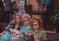
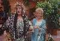
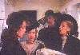

{kind=link}
{kind=link}
{kind=link}
 Third scene, at supermarket, gangster-girls hassling Angela about Russo. Theresa (Ellen) deliberately runs her
shopping trolley into Angela's shopping trolley. Connie arrives and crushes a carton of eggs. Duration 1 min 24 secs.
Third scene, at supermarket, gangster-girls hassling Angela about Russo. Theresa (Ellen) deliberately runs her
shopping trolley into Angela's shopping trolley. Connie arrives and crushes a carton of eggs. Duration 1 min 24 secs."Married to the Mob", 1988, 100 minutes, colour.
The Plot:- Angela de Marco (Michelle Pfeiffer) is married to gangster "Cucumber" de Marco (Alec Baldwin). "The Cucumber" is caught fooling around with Tony Russo's (Dean Stockwell) girlfriend and Russo "ices" them both. Russo soon makes a move to woo Angela. Angela leaves town to escape Russo and "the heat" from Russo's jealous wife Connie (Mercedes Ruehl) and her gangster-girl girlfriends. F.B.I. man (Mathew Modine) and the gangsters follow Angela and finally it ends in a hilarious confrontation. Angela and the F.B.I. man become "an item". Ellen Foley plays "Theresa", one of the gangster-girls.
  After a gap of approx. 4 mins 50 secs, First scene featuring Ellen Foley with gangster-girls at hair salon. Connie Russo enters and all have a chat with Angela. Duration 2 mins 5 secs.
 After a gap of approx. 15 mins , second scene featuring Ellen, at the Wake, after the funeral for "Cucumber" de Marco. She takes a platter from Angela. She is also seen later, at a window, watching Angela and Russo in the garden. Duration 2 mins 44 secs.
Third scene, at supermarket, gangster-girls hassling Angela about Russo. Theresa (Ellen) deliberately runs her
shopping trolley into Angela's shopping trolley. Connie arrives and crushes a carton of eggs. Duration 1 min 24 secs.
After a gap of approx. 2 mins 12 secs, fourth scene featuring Ellen, duration 28 secs, gangster-girls see Angela
leaving town.
After a gap of approx. 2 mins 50 secs, fifth scene featuring Ellen, Connie's birthday party, duration 1 min 3 secs. And when the scene of the action leaves town, no further appearances.
So there you have it. A real film featuring Ellen Foley in which she receives an opening credit. She even runs her shopping trolley into Michelle Pfeiffer's.
Go back to the start of Ellen Foley Information.